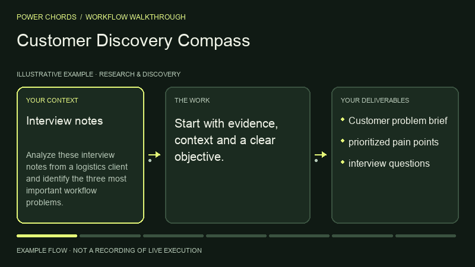

- 01
Download the workflow
Use your Lazo account. Verify your email on your first visit.
- 02
Open it in your agent
Add the downloaded file to your AI chat or project.
- 03
Add your context
Bring the inputs below. Review the result with your agent.
A LITTLE CONTEXT GOES A LONG WAY
What to bring
Add these in your AI agent when you start.
Interview notes
Interview or customer-call notes.
Current workflow
Your process doc or a quick step-by-step description.
User complaints
Support tickets, reviews or feedback messages.
Observed failures
Examples, screenshots or incidents that show the issue.
NO GUESSWORK
Use it where you think.
Download first. Then choose your agent.
- Open a new chat in your AI agent.
- Attach the workflow file you downloaded.
- Add your inputs and paste the starter prompt below.
Your AI provider may charge for use.
Advanced: install in a project
For developer tools. Requires Node.js 24.x and Git.
git clone https://github.com/saurabhmisal/power-chords.git cd power-chords node scripts/capabilities-cli.mjs install customer-problem-discovery --agent codex --project ../my-project
Replace ../my-project with your project folder.
MAKE IT YOURS
Start with a real question.
Analyze these interview notes from a logistics client and identify the three most important workflow problems.
Replace this example with your task and sources.
Use Power Chords Customer Discovery Compass. Analyze these interview notes from a logistics client and identify the three most important workflow problems. Return Customer problem brief, prioritized pain points, interview questions. Show supporting evidence, assumptions, validation and next actions. Ask for my approval before any external write or publication.

The workflow, step by step
- 1Identify the affected persona and job-to-be-done
- 2Separate observations from assumptions
- 3Map the current workflow and top frictions
- 4Write testable problem hypotheses
- 5Define discovery questions and evidence gaps
Do not claim prevalence or severity without customer evidence.
Latest workflow review
This week’s update
Reviewed current source references and duplicate instructions. No change to this skill’s workflow or operating guidance.
Compared with the previous published version.
Earlier weekly reviews
Refined the checks for external research-tool access and the evidence to retain when reviewing discovery findings.
Clarified permission checks for external research tools and how to keep sensitive interview details out of tool logs.